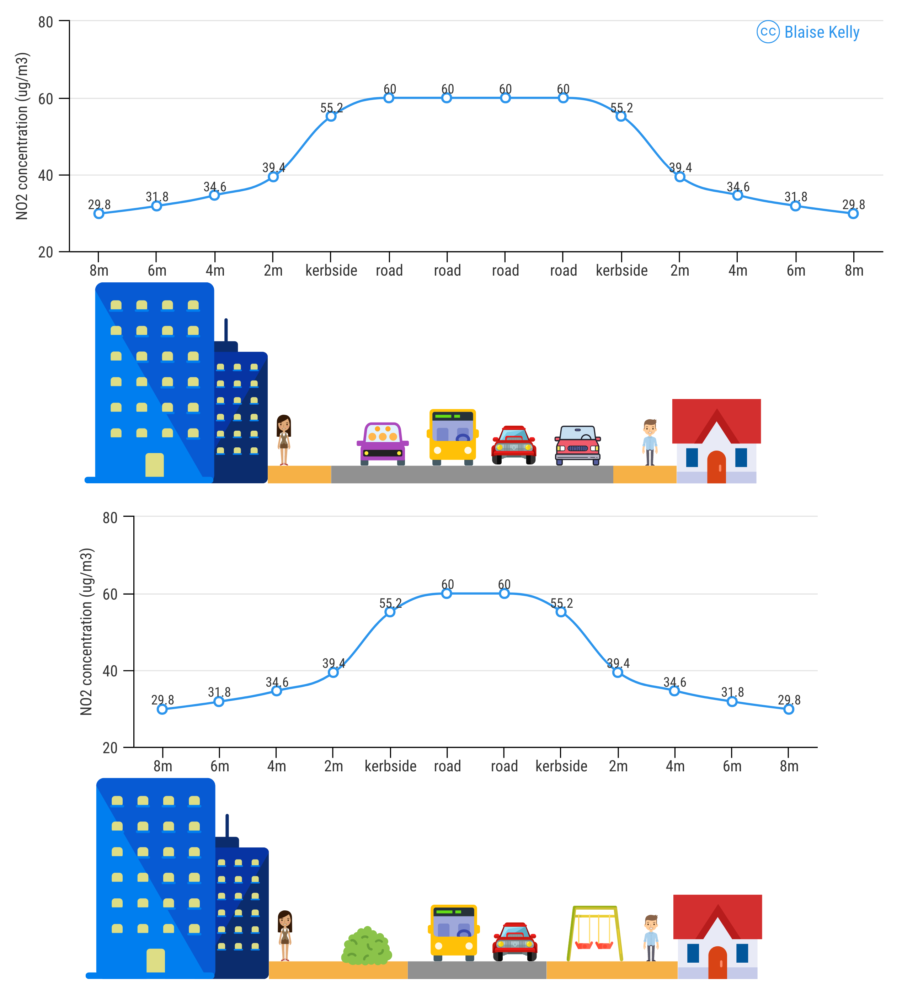

impacts of street space allocation on health and active travel potential
Summary
London’s Ultra Low Emission Zone (ULEZ), introduced in central London in April 2019 and expanded to inner London in 2021 and London-wide in 2023 (GLA 2025), cut NO2 at central London traffic sites by around 20% in its first three months (Tong et al. 2025). Outside central London, there is little evidence that ULEZ and Clean Air Zones (CAZs) (7 of which have been implemented) in other cities have been effective in one of the main goals: reducing NO2 levels. Furthermore, these policies have done little to address other collectively more serious urban issues which should also be considered given their public health rationale.
This raises a key question: is it possible to reduce NO2 faster whilst also addressing other urban challenges that collectively have a bigger impact on public health, including road traffic casualties, obesity, and poor mental health? Modal shift to active modes has great potential to tackle each of these issues, but is mostly left out of the discussion around CAZ-type policies. Yet large co-benefits to be found in joint active travel and air quality policies. For example, by reducing road widths to free up urban space for active travel, the source-receptor distance is increased, road traffic is constrained and NO2 can be reduced. Furthermore, the reclaimed street space could support activities such as walking, wheeling, cycling, playing and plants/trees/crops which have been shown to have large health benefits.
This study proposes to model the changes in air pollution exposure at the level of sensitive receptors as a result of policies including road space reallocation which is where the negative impacts of emissions are most felt, rather than focusing solely on vehicle emissions.
Background
Society faces severe urban environmental challenges. Cities are not only a major driver of climate change they are extremely vulnerable to its effects, such as sea level rise and extreme weather. 80% of the population of developed countries live in cities and often are exposed to environmental risks such as noise, air pollution (Woolf et al. 2024), as well as road traffic collisions and soaring rates of child and adult obesity and mental illness.
Biodiversity loss and the resulting ecosystem collapse is a serious national security threat (Government 2026) . Road transport is responsible for nearly 1/3 of UK’s total CO2 emissions (DESNZ 2026) which affects health, building operation (Kelly 2019b) (Fuller 2019) and climate change.
Many people drive instead of walk because they don’t feel safe on streets, yet violent crime is the lowest since records began (ONS 2026) but motor vehicle traffic is the highest it has ever been (DfT 2026a). In 2025 girls under 20 walked on average 70 miles (27%) less per year than the 264 miles they did in 2004 (DfT 2026b) Children’s play opportunities are well below where needed (Firth and Powell 2025). The two leading external causes of death of children are road traffic collisions and suicide (NCMD 2023) .
One of the major urban challenges is Air pollution. Air pollution policy in the UK has historically focused on legislating vehicle emissions. The reductions in NO2 seen in the last few years are the result of work that began at the start of the Millennium (euractiv 2001), that was passed in the EU in 2008 and came into effect in June 2010 (Directive 2008/50/EC of the European Parliament and of the Council of 21 May 2008 on Ambient Air Quality and Cleaner Air for Europe 2008) .
Legislation can be a powerful tool in making change, but used in isolation can also have unintended consequences. In making EU legislation on vehicle CO2 emissions less burdensome for manufacturers a mass element was added which led to the proliferation of SUVs, slowing the emissions reductions it was designed to create and creating other problems for cities[T&E (2019)](T&E 2011) .
In a similar way NO2 legislation did not have much effect for nearly 10 years, with cities across Europe largely failed to meet these targets (EC 2017) because instead of reducing emissions, manufacturers chose to defraud the system (Jong and Linde 2022) .
In early 2018, a 7 year legal case brought by Client Earth forced the government to take the “fastest route to compliance” to address the exceedances (BBC 2018) .
Defra’s Joint Air Quality Unit (JAQU) decided to push for CAZs as a narrowly-focussed solution to air quality issues (JAQU 2017). This was despite:
- Continued uncertainty over real world vehicle emissions (Reid 2019)
- Road transport contributing >1/5 of all CO2 emissions (today it is >1/4 (DESNZ 2026))
- An acknowledgement that the world faced a climate emergency (BBC 2019)
- A study estimating switching 10% of car trips to cycling and walking would reduce NO2 by 5 times more than CAZs (Ballinger et al. 2017) as well as reducing Particulate Matter (PM), something the current CAZs have been poor at addressing (Parliament 2026) .
Other studies have investigated the effect of modal shift on Air Quality by modelling changes in road emissions resulting from modelled or measured modal shift(Matajs et al. 2026) (Mueller et al. 2020), which fits with the focus on directly reducing emissions from the road. The complicating factor in all these studies is the level of modal shift, one of the reasons active travel is often ignored as the feasibility of this is disputed, often as a result of “motonormativity” (Walker, Tapp, and Davis 2022).
It is often thought reducing space for vehicles on one road is like blocking a river, neighbouring roads, which might not be designed with the same capacity become overloaded, like blocking a river. However, as far back as 1994 the government was acknowledging evidence of induced traffic (SACTRA 1994). In 1998 evidence was presented on what is now termed traffic evaporation(Cairns, Hass-Klau, and Goodwin 1998) demonstrating with more than 100 examples from around the world how removing space for vehicles reduces traffic on the road and in the wider area. Other studies have come to similar conclusions(Sloman, Hopkinson, and Taylor 2017) but the concept still remains divisive with few follow up studies(Goodwin 2016). The introduction of Low Traffic Neighbourhoods (LTN) in London and other cities was an opportunity to study this and the results concur, showing traffic and pollutant reductions in the LTNs as well as on surrounding roads [Yang et al. (2022)](Khreis et al. 2026)[Thomas and Aldred (2023)](Lambeth Council 2021)(Whelan, Luiu, and Pope 2024).
The cost of living continues to be one of the most pressing political issues. The shifts from active to motorised modes that has happened over the past century in most cities has had significant negative cost implications for the public in cities, and there are potentially huge cost savings when this trend is reversed (Hendrich et al. 2026). Whilst public support for road pricing is generally positive, the benefits are often only seen in official reports and statistics and they send the message that environmental measures mean restrictions and expense (Bretschger 2021). Manchester chose to spend money originally designated for CAZ on other measures (Gawne 2025) such as one of the the largest segregated cycle networks outside of London (Pidd and editor 2018).
It is sometimes recommended that cycle routes focus on routes through parks and green spaces that avoid heavy traffic and pollution [EPIC task group (2024) . However, to make cycle routes attractive for everyday journeys, the routes should be as direct and short as possible (Lovelace et al. 2016).
Road traffic dispersion models such as ADMS-Roads/Urban are often subject to substantial input data uncertainty. These arise from e.g. simplified source geometry, generalised land-use and boundary-layer parameterisation, limited spatial representativeness of meteorological inputs, and coarse spatial disaggregation of emission inventories. Many models typically represent only road traffic emissions, excluding non-traffic and regional background contributions. There is a huge potential to improve model inputs and automate the model setup.
Hypothesis
Little attention has been paid to the potential impacts of physical changes to urban space reducing emissions and improving air quality, in-line with government policy. The hypothesis that will be tested during this PhD is the following:
Road space reallocation is a more effective strategy for reducing urban air pollution than relying on vehicle emission controls, both by directly reducing traffic volumes and the increases in source-receptor distance that would follow.
NO2 levels fall with distance to source, as shown in Figure 1, which shows a calculation based on the NO2 “Fall off with distance” calculator (Defra 2018) estimating the reduction in NO2 concentrations at buildings if the kerb is moved 2m away from the building on each side of the road and kerbside concentrations remain the same.

Figure 1 - Based on the Defra NO2 fall off with distance calculator, increasing the distance from a road with a kerbside concentration of 60 μg/m3 by 2 metres is estimated to drop the concentration of NO2 at the receptor (building) from 39.4 to 34.6 μg/m3, a 14% decrease.
In early 2015, road space removal as part of London’s Cycle Superhighway build out seems to have resulted in a 20% and 23% reduction in two roadside NO2 monitoring sites in the space of a few months (Kelly 2019a) .
The majority of air pollution exceedances are along major roads where the 350 Roadside Urban Air Quality Monitoring Network sites are located. Focusing on these roads could not only reduce air pollution directly at the worst sites, but also have a bigger impact on reducing overall vehicle traffic, through traffic evaporation.
Many studies have looked at the benefits of interventions such as filtered permeability/LTNs but few have assessed the impact of altering major city arteries that are responsible for the most air pollution. Placing walking and cycling routes along main roads is more acceptable if the roads have less motor traffic, are less polluted, quieter, cooler and safer.
Once proven to be effective through modelling implementation could be as simple as laying some cones out. To facilitate travel during the COVID19 pandemic urban space was reallocated in the form of Emergency “pop-up”, or tactical cycle lanes (Schapps 2020), almost overnight. Despite in some cases only being movable cones these lanes were effective and some were converted to permanent infrastructure e.g. Stretford in Trafford, 2021 and later in 2025.
Focusing on these approaches could not only improve air pollution faster, but give cities more control than relying on engine manufacturers as well as delivering a plethora of systems benefits that addresses the urban emergency and also engages the public with visible measures, such as green space to absorb rainfall, reduce heat, boost biodiversity, provide areas to sit/play, walking, cycling routes, space for cafes and restaurants, to make their city more livable.
Methods
The study will to characterise each site to be modelled. On the one hand it will build on existing reproducible and open access geospatial tools already created by the student, many of these geospatial tools are underpinned by packages developed by ITS, such as osmextract, osmactive, stplanr and it will also make use of significant advances in geospatial processing such as duckspatial and H3 grids.
The modelling package ‘aermodr’, which is still in its early stages, currently builds and runs self-contained, tileable AERMOD guassian dispersion model runs entirely from open data, for example bypassing AERMET; AERMODs meteo processor with ERA5 reanalysis meteorology inputs. It derives LiDAR and land-use based surface roughness and Monin-Obukhov length. Source geometry is derived from OSM road networks and gridded emissions as source data, and large domains are split into independent tiles — each with its own locally-derived roughness and meteorology, run in parallel — so the model can represent spatially varying surface characteristics as an improvement over a single monolithic AERMOD run. Separate tools enable Chemistry Transport Model (CTM) NetCDF-to-raster conversion, NOAA observational data import, based on the Worldmet R package and plotting functions for evaluating model output against measured concentrations heavily based on the openair and tmap R packages.
The output will be characterisation of the urban space, for example current road/green space area and the differences for various scenarios.
The air pollution modelling outputs will estimate the changes in roadside concentrations by modelling the road width differences.
Whilst the urban space element is the key focus it will probably be helpful and interesting to undertake some modelling to assess vehicle flows/modal shift potential.
Additionally looking at the impact of the “pop-up” cycle lanes roadside sites mentioned above will be part of this research.
Unlike research focusing on filtered neighbourhoods and the Barcelona Superblocks, it will focus on main roads that have been deemed to be the most polluted, those part of the
Core analysis
- Quantify urban public space in cities and the proportion given to roads, using LiDAR, OSM, Land registry and OS data.
- Get flow and speed data to estimate emissions from roads.
- Meteo data from ERA5 to calculate necessary meteo parameters for model
- Combine data in the US EPA’s open access AERMOD with an R interface (Kelly 2026) that enables domain tilling and run in parallel to model concentrations at sensitive receptors (locations where limit values apply/maybe all buildings).
- Reduce road widths in the model with minimal to aggressive approach but leaving road emissions the same and model concentrations at receptors.
- Coupling regional air quality models from the Copernicus ADS/run labelled LOTOS-EUROS (Segers et al. 2025).
- Tools such as osmextractm osmactive, stplanr, sfnetworks which have been developed by the ITS team.
- use H3 grid outputs for AERMOD, this enables adaptive resolution e.g. finer near roads and simplification of projection and spatial joining.
Additional
- Quantify effect reduced road space has on traffic flows and modify pollutant emissions
- Apply this to CO2 emissions estimates
- PCT as a framework for cycle route identification.
- stplanr
- Meteorological normalisation tools for removing the effect of weather from observation data (Grange et al. 2018) as well as AQEval (Ropkins et al. 2026)
- Tools such as DuckDB and Apache Arrow for improving efficiency of RAM use.
Outcomes
- Calculate impact on all applicable pollutant concentrations at sensitive receptors (NO2, PM10, PM2.5) for the following scenarios:
- road emissions factor stays the same
- road emissions factor is adjusted to represent various traffic scenarios, congested, reduced speed, euro standards.
- Calculate urban area reclaimed (km2)
- Quantify potential of increase in cycling and walking based on assumptions of urban space allocation
- Estimate increase in green space and quantify the effect on urban heat island effect/drainage/biodiversity/human well being
- Estimate for change in receptor exposure based on physical space reallocation only
- Estimate of public urban space gain that can be used for green space, active travel, play/community space
- Open AERMOD R package
- Package to characterise urban space from LiDAR
Datasets
- Open access LiDAR 1m Digital Surface Model (DSM) and Digital Terrain Model (DTM) of England (EA 2025)
- Road geometry data from OS/local authorities.
- Building/Land-use/Road data from OSM, OS, Land registry
- Population data
- STATS19
- state of the art datasets for hourly traffic/speed profiles for all roads - Juans PhD?, Google API etc.
- UK Air quality observation data network for validation (openair R package) (Carslaw, Davidson, and Ropkins 2026)
- Copernicus Atmospheric Modelling Service (CAMS) for historic background pollution data (ADS 2026)
- ERA5 historic meteo data e.g. irradiation, temperature, wind speed, soil/ground parameters (C3S 2018)
- Remote albedo for greenspace analysis (C3S 2018)
Prospective PhD student’s skills and experience
The prospective student has a very strong academic foundation and substantial real-world experience in transport modelling, emissions analysis and environmental assessment. In a 2010 thesis, they used paper road plans and traffic-signal data from the Greater Manchester Transport Unit, together with a network created by Simon Box at the University of Portsmouth, to construct the road network around Chorlton-cum-Hardy and develop a microsimulation model in S-Paramics. They then submitted two traffic-signal scenarios to the University of Strathclyde for comparative emissions analysis. This provides directly relevant experience of translating changes in the street network into measurable emissions outcomes.
They have substantial professional experience in Gaussian dispersion modelling with ADMS, having undertaken more than 100 Air Quality Assessments (AQAs) and numerous Environmental Impact Assessments (EIAs). This work has developed a practical understanding of model setup, emissions data, interpretation of results and the regulatory context in which air-quality evidence is assessed. They hold Member status of the Institute of Air Quality Management (IAQM), with Chartered Environmentalist status through the IES in progress.
They also have experience automating air-quality models for ADMS and AERMOD using R and spatial packages. Their research has involved Chemistry Transport Model data on air pollution, pollen and heat to estimate population stress, as well as combining mobile-phone population data with census-based synthetic populations to estimate hourly exposure. Together, these skills provide a strong platform for the proposed PhD: the ability to integrate spatial, temporal and environmental datasets; build reproducible modelling workflows; quantify pollutant exposure at relevant receptors; and develop robust, policy-relevant evidence on the effects of road-space reallocation.